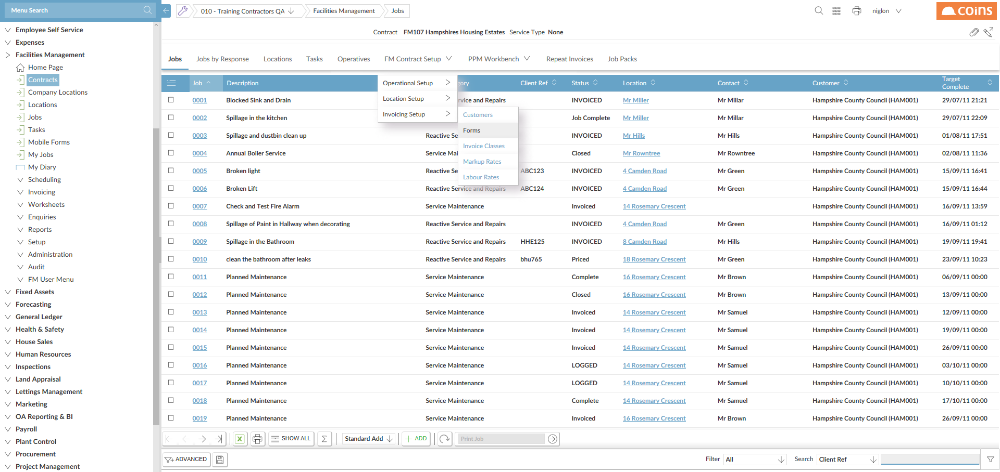
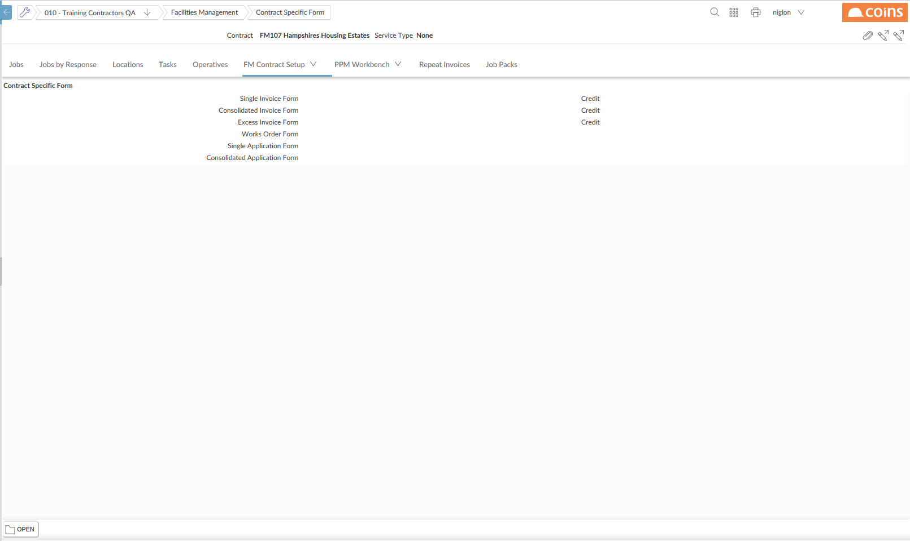
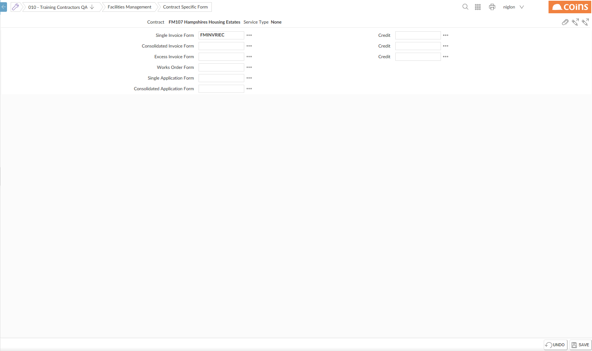

To set the invoice details for a
- Open the
- From the Options menu, select FM
- Select the Invoicing Setup tab group and select Forms

- The Contract Specific Forms screen is displayed.

- On the Forms tab, click
 .
.

- Enter the codes for any configurable documents you want to use instead of the defaults.
- Click
 .
.
To set the invoice details for a major category:
- Click the link in the Code column for the major category for which you want to set up invoice details.
- Select the Invoice Detailstab
- Click

- Enter the codes for the invoice style or any configurable documents you want to use instead of the defaults.
- Click .
To set the invoice details for a minor category:
- Open the
- From the Options menu, select FM
- From the menu on the FM
- Click the link in the Code column for the major category.
- On the Minor Categories tab, click next to the minor category for which you want to set up invoice details.
- Enter the codes for the invoice style or any configurable documents you want to use instead of the defaults.
- Click .